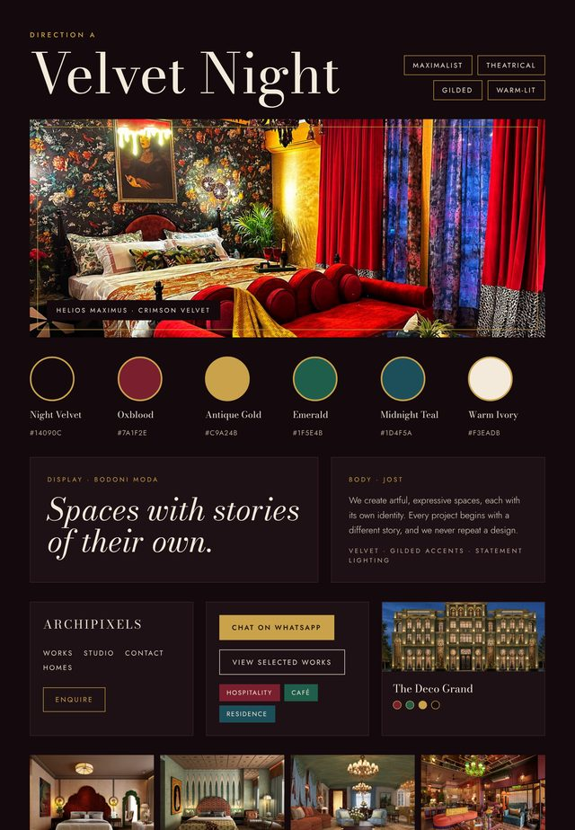
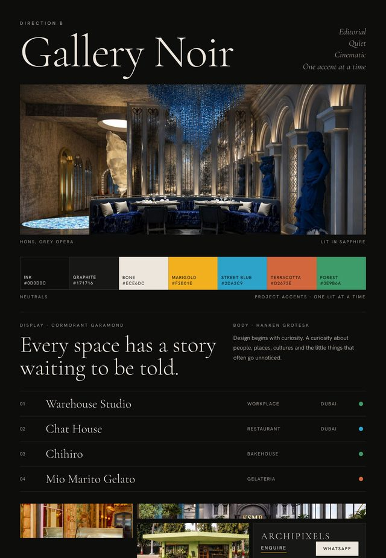
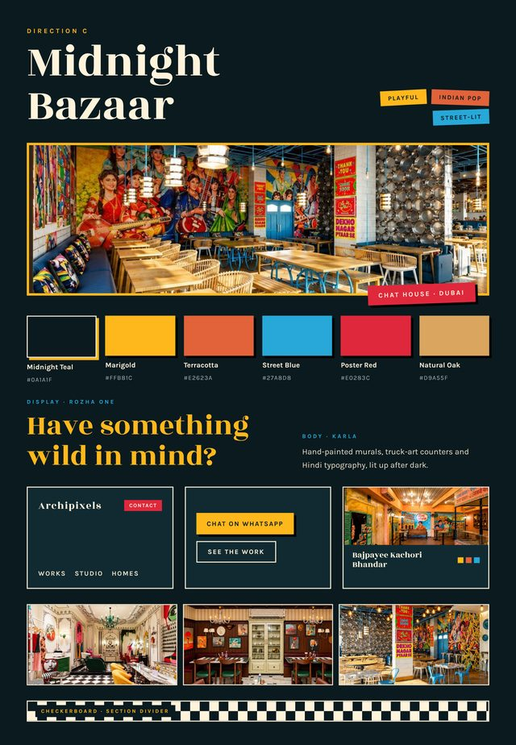
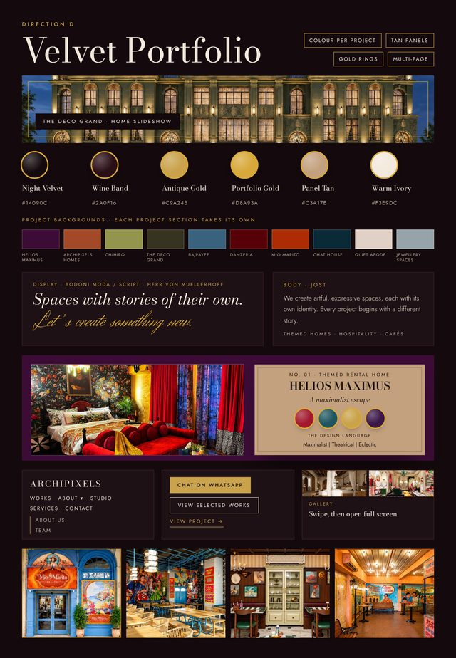
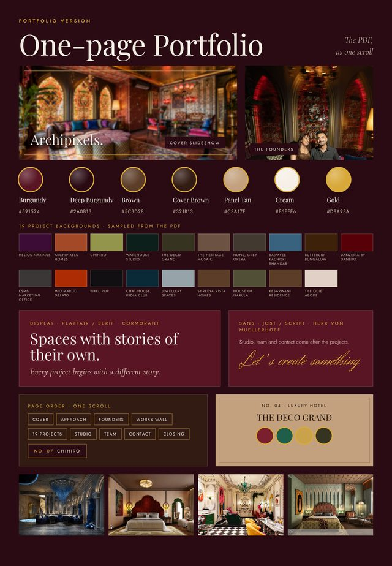

Website redesign · Template preview
Five versions for Archipixels.
Directions A, B, C and D are full multi-page templates with the same content. The fifth version is the PDF portfolio as one scrolling page. Open any version. On the multi-page ones, the A · B · C · D switcher at the bottom left of every page opens the same page in another direction. The mood boards for all five are further down.

Velvet Night
Oxblood-black and antique gold, with Bodoni headlines.
Fading slideshow with a slow zoom, word-by-word headlines, gold rules that draw in, parallax, warm shadows and a cursor spotlight.
Open →
Gallery Noir
Near-black with large serif type. Each project has its own accent colour.
Pinned horizontal scroll, image reveals, a cursor-following preview on the works index, film grain and parallax.
Open →
Midnight Bazaar
Deep teal with marigold and street-poster stickers.
Stacked-card hero, coverflow works slider, wobbling stickers, a marquee that skews as you scroll, tilting cards and hard shadows.
Open →
Velvet Portfolio
The one-page portfolio on the multi-page structure of Direction A. Each project page takes the project's own colour. The menu is Works, About (with About us and Team), Studio, Services, Portfolio and Contact.
Fading hero slideshow, photo wipes with parallax, swatches that pop in, a filterable works wall, a project gallery with lightbox, a next-project band and a closing line written out in script.
Open →
One-page portfolio
The PDF portfolio as a single scrolling page: cover, intro, founders, all 19 projects in their own colours, then studio, team and contact.
Fading cover slideshow, word-by-word headings, photo wipes with parallax, swatches that pop in, a project counter, an index menu, a lightbox and a closing line written out in script.
Open →Mood boards
How each version looks and feels.
One sheet per version with its palette, type, photography and key components. Open a board to see it full size, then use the arrow keys or swipe to move between them.
-

A · Velvet NightOxblood-black, antique gold -

B · Gallery NoirNear-black, one accent at a time -

C · Midnight BazaarDeep teal, marigold, stickers -

D · Velvet PortfolioA's structure, a colour per project -

One-page portfolioThe PDF as one scroll


Pages in each direction: HomeAboutStudioTeamServicesWorks (filterable)19 project pagesContact